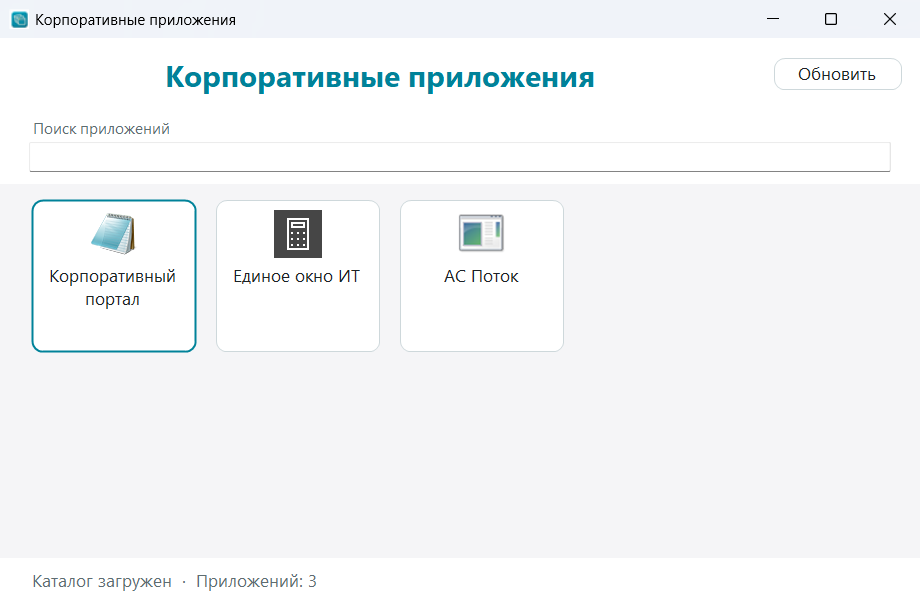
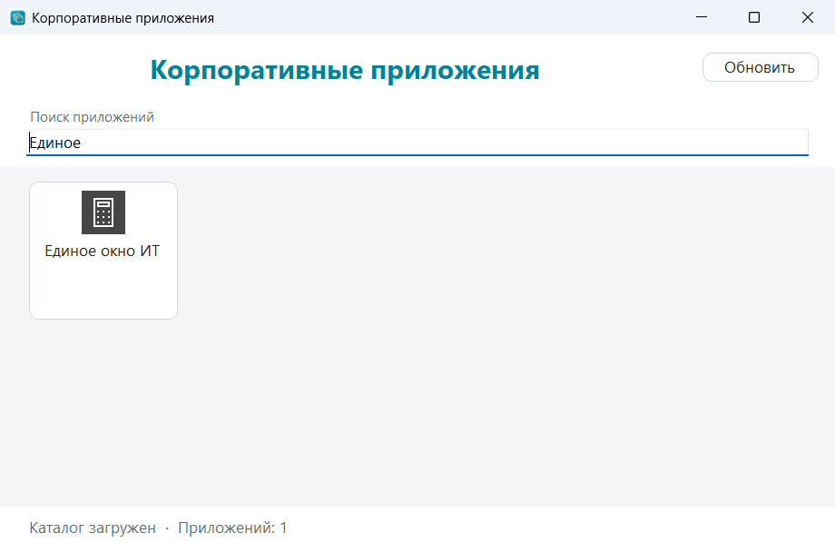
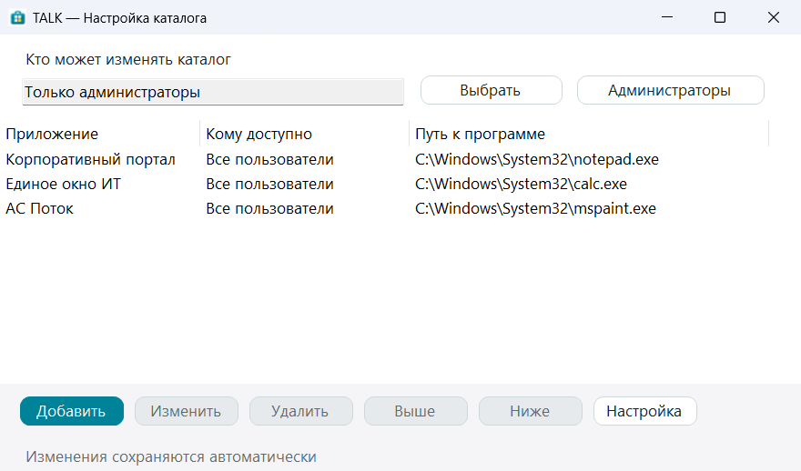
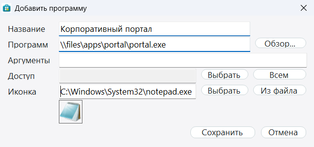
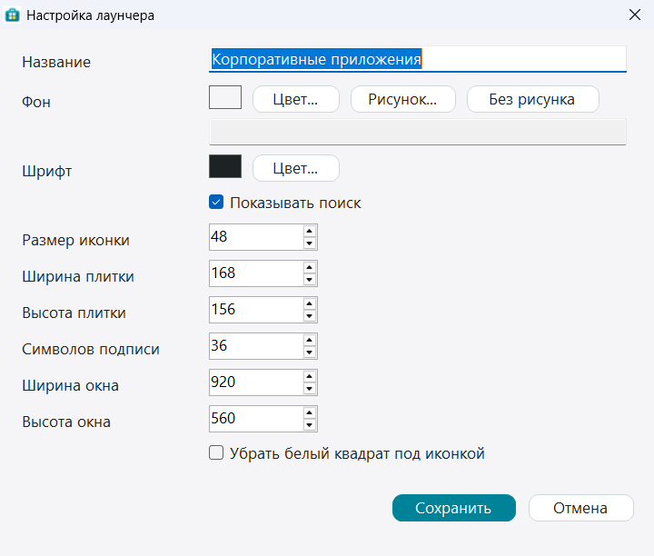

TALK — работа в окнах
Только то, что видно на экране. На снимках три примерные программы, чтобы было понятно, куда нажимать.
Окно запуска
Сотрудник открывает лаунчер и видит плитки своих программ. Щелчок по плитке запускает программу. Внизу строка показывает, сколько программ попало в окно.

Обновить перечитывает список. Нажмите её, если каталог только что изменили, а плитки ещё старые.
Поиск
Поле «Поиск приложений» оставляет плитки, в названии которых есть набранный текст. Остальные скрываются. Сотрите текст — вернутся все доступные программы.

Каталог
Это окно администратора. Сверху указано, кто может менять каталог. Пока там «Только администраторы», список правят администраторы. Выбрать открывает обычное окно Windows и просит доменную группу. После этого каталог меняют только её участники. Администраторы возвращает прежний режим.

- Добавить — новая программа.
- Изменить — правка выбранной строки. Двойной щелчок по строке делает то же.
- Удалить — убирает строку из каталога. Файл программы на диске не удаляется.
- Выше и Ниже — порядок плиток в окне запуска. Сначала выберите строку.
- Настройка — внешний вид окна запуска.
Колонка «Кому доступно» показывает «Все пользователи», если группа у программы пустая. Такую плитку видят все. Если указана группа, плитку видят и запускают только её участники.
Карточка программы
Окно «Добавить программу» и «Изменить программу» устроены одинаково.

- Название — подпись на плитке.
- Программа — файл, который запускается. Обзор… выбирает exe, cmd, bat или ярлык lnk. Путь можно вставить вручную, в том числе \\сервер\папка\программа.exe.
- Аргументы — параметры командной строки.
- Доступ — группа, которой видна эта программа. Выбрать открывает окно Windows. Всем очищает группу.
- Иконка — откуда взять значок. Сюда подходит exe, dll, ярлык, ico или картинка, в том числе файл по сетевому пути. Из файла очищает поле: тогда берётся значок самой программы или её ярлыка.
Под полем значка сразу виден эскиз. Сохранить записывает карточку, Отмена закрывает окно без записи.
Внешний вид
Кнопка «Настройка» в каталоге открывает это окно. Здесь меняется только окно запуска, не список программ.

- Название — заголовок окна запуска.
- Фон — цвет области с плитками. Рисунок… кладёт картинку на эту область: она вписывается целиком, по краям остаётся цвет фона. Без рисунка убирает файл.
- Шрифт — цвет подписи на плитке.
- Показывать поиск — полоска под заголовком.
- Размер иконки — сторона значка на плитке.
- Ширина плитки и Высота плитки — размер карточки. Если карточка меньше значка, она чуть увеличивается сама.
- Символов подписи — сколько букв названия остаётся на плитке. Дальше стоит многоточие.
- Ширина окна и Высота окна — размер лаунчера при открытии.
- Убрать белый квадрат под иконкой — значок и подпись лежат прямо на фоне, без белой карточки.
Сохранить применяет вид. Откройте окно запуска заново или нажмите в нём «Обновить», чтобы увидеть изменения.